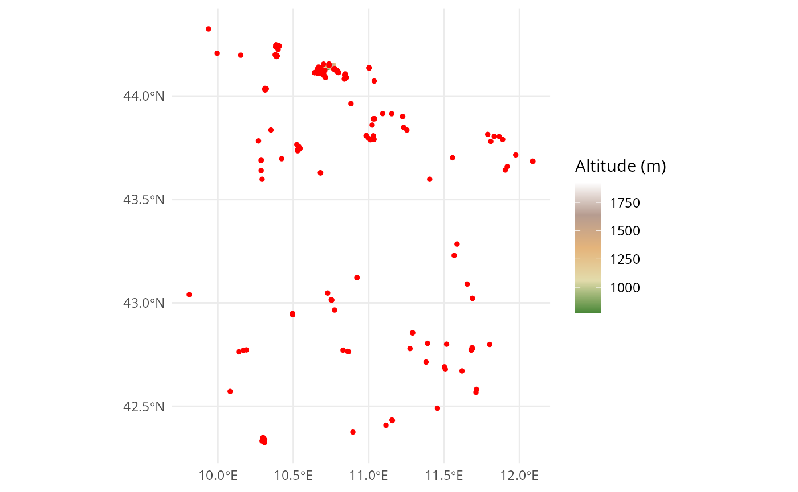

Altitude data
Markus Bauer
2026-07-05
altitude-vignette.RmdThis vignette illustrates how you can get altitude data for the
wrapper function check_eunis. Since the altitude data for
Europe is too big for a R package, you have to get it on your own.
Example
First, we illustrate the altitude data for our example dataset.
Load the example data
Load the altitude data for the area of our example.
altitude <- terra::rast(
system.file("extdata", "data_example_altitude.tif", package = "RESY")
)
altitude
#> class : SpatRaster
#> size : 63, 168, 1 (nrow, ncol, nlyr)
#> resolution : 0.0005555556, 0.0005555556 (x, y)
#> extent : 10.69171, 10.78504, 44.12662, 44.16162 (xmin, xmax, ymin, ymax)
#> coord. ref. : lon/lat WGS 84 (EPSG:4326)
#> source : data_example_altitude.tif
#> name : eurodem
#> min value : 771
#> max value : 1927We load the example plots.
data_sites <- readr::read_csv(
system.file("extdata", "data_example_sites.csv", package = "RESY"),
show_col_types = FALSE
) |>
dplyr::select(PlotObservationID, Longitude, Latitude) |>
sf::st_as_sf(coords = c("Longitude", "Latitude"), crs = 4326) |>
sf::st_transform(terra::crs(altitude))Map
We show the map with altitude data and the plots
ggplot() +
tidyterra::geom_spatraster(data = altitude) +
tidyterra::scale_fill_whitebox_c(
palette = "high_relief",
na.value = "lightblue"
) +
geom_sf(data = data_sites, color = "red", size = 1) +
labs(fill = "Altitude (m)") +
theme_minimal()
© EuroGeographics 2026, Istituto Geografico Militare (IGM), Italy; Licence
altitude_values <- terra::extract(altitude, terra::vect(data_sites))
data_sites <- data_sites |>
mutate("Altitude (m)" = altitude_values$eurodem)
data_sites
#> Simple feature collection with 200 features and 2 fields
#> Geometry type: POINT
#> Dimension: XY
#> Bounding box: xmin: 9.809499 ymin: 42.32483 xmax: 12.08963 ymax: 44.32464
#> Geodetic CRS: WGS 84
#> # A tibble: 200 × 3
#> PlotObservationID geometry `Altitude (m)`
#> * <chr> <POINT [°]> <dbl>
#> 1 JZ37 (9.93798 44.32464) NA
#> 2 FR49 (11.09287 43.91546) NA
#> 3 PT45 (11.65339 43.09104) NA
#> 4 ZH63 (10.53301 43.73897) NA
#> 5 TF93 (10.40239 44.23978) NA
#> 6 KG68 (10.40203 44.24087) NA
#> 7 QJ27 (10.40635 44.2413) NA
#> 8 JN90 (10.40602 44.24296) NA
#> 9 ZM18 (10.66071 44.12734) NA
#> 10 BQ20 (10.6589 44.12456) NA
#> # ℹ 190 more rowsCrop your own altitude data
Download the elevation data from EuroDEM (European Digital Elevation Model) from https://www.mapsforeurope.org/datasets/euro-dem which is from EuroGeographics and the project is cofounded by the European Union.
Load and adapt EuroDEM data
Save it in your data folder of your R project with your coordinates of your vegetation surveys (sites).
# altitude <- terra::rast(
# here::here("data", "euro-dem-tif", "data", "eurodem.tif")
# )EuroDEM is in arcseconds and we have to rescale it to degrees.
# e <- terra::ext(altitude)
# terra::ext(altitude) <- terra::ext(
# e[1] / 3600, e[2] / 3600, e[3] / 3600, e[4] / 3600
# )The altitude data needs the right coordination system: EPSG:4258 - ETRS89 (European Terrestrial Reference System 1989) in degrees.
# terra::crs(altitude) <- "EPSG:4258" # geographic ETRS89, degreesGet an overview of the status of the EuroDEM data.
# altitudeLoad example sites
Now, we can load the sites data and transform it to an sf object and align the CRS to the raster altitude data.
# data_sites <- readr::read_csv(
# here::here("data", "data_example_sites.csv", package = "RESY"),
# show_col_types = FALSE
# ) |>
# sf::st_as_sf(coords = c("Longitude", "Latitude"), crs = 4326) |>
# sf::st_transform(terra::crs(altitude))Crop and save altitude data
We can crop the altitude data to the region of our plots.
# altitude_cropped <- data_sites |>
# sf::st_buffer(0.5) |> # degrees now, ~50 km
# sf::st_bbox() |>
# terra::crop(x = altitude, y = _) |>
# terra::project("EPSG:4326")Save the smaller file for a latter use.
# terra::writeRaster(
# altitude_cropped,
# here::here("data", "data_example_altitude.tif"),
# overwrite = TRUE
# )